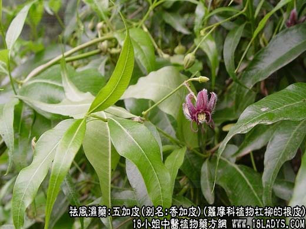
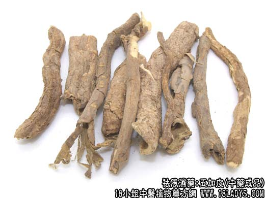
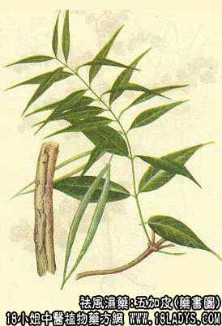

五加皮为较常用中药。《神农本草经》列为上品。历代本草所记载的五加皮为五加科五加属植物的根皮。京津习用的为萝摩科植物杠柳的根皮。
别名：香加皮、北五加皮、杠柳皮。
来源：为萝摩科植物杠柳的根皮。
产地：河北、河南、江苏。
植物形态：落叶木质藤本。全体含白色乳汁。小枝对生、灰黄色，有光泽。叶对生，披针形或长圆形披针形，先端尖，含多数顶端簇生白色长毛的种子。
性状鉴别：根皮呈卷筒状或块片状，外表面棕黄色或灰棕色，较粗糙，栓皮常呈鳞片状剥离。内表面淡白色，较平滑，有细纵纹。质较脆，易折断，断面淡黄色，有浓烈的特殊香气（有散在大型油细胞），味苦而有刺激性。
以皮厚，片块整齐、内色黄，气味浓厚者为佳。
主要成分：南五加皮含挥发油，甲、乙种维生素；北五加皮含杠柳毒甙等，为强心甙。
功效与作用：祛风湿，补肝肾而强筋骨，可视为种兼有强壮作用的镇痛剂。南五加皮药性较温和。北五加皮作用强烈，具有一般强心甙作用的特点，可视为一种兼有强壮作用的镇痛剂。南五加皮药性较温和。北五加皮作用强烈，具有一般强心甙作用的特点，可视为强心剂，对心脏的作用于毒毛旋花甙相似。有毒性，应慎用。
炮制：切片生用。
性味：辛、苦、温。
归经：入肝、肾二经。
功能：祛风湿，强筋骨。
主治：风湿痹痛，腰膝软弱，脚气，浮肿。
临床应用：1、治慢性风湿关节炎、风湿性肌炎。功力偏于下半身，以祛湿为主。凡风湿腰痛、手足冷痛均可用，多配其它祛风湿药和补益药浸酒，即五加皮酒，有镇痛和强壮作用，不仅治风湿痛，而且对脚气病足膝萎弱、肾虚、小便遗溺等也有一定治疗价值。制五加皮酒最好用南五加皮，因北五加皮有毒性，过量饮用北五加皮酿制的酒，有时会引起中毒。广东酿制的五加皮酒药性较和缓，常以红毛五加皮配黄芪、当归、川芎、牛膝、续断、海桐皮、千年健等酿制。
2、治疗轻症水肿、小便不利，常与其它利尿药如茯苓皮、大腹皮等配伍，方如五皮饮。
3、治小儿发育迟缓、筋骨萎弱、行迟。用五加皮15g，配牛膝、桑寄生、续断各7.5g研末，每服1.5g，开水送服。
使用注意：阴虚火旺，口苦口渴者不宜用。
用量：6～15g。
处方举例：五皮饮（《麻科活人全书》）：五加皮12g、茯苓皮15g、大腹皮9g、生姜皮6g、陈皮6g，水煎服。
注：五加皮品种较为复杂。药材主要有三类：
1、为全国广大地区所用的萝摩科植物杠柳的根皮，即正文所描述的北五加皮。
2、为五加科植物五加及其同属几种植物的根皮，药材名五加皮（南五加皮），主产于山西、浙江、湖北等地，性状与北五加皮相似，唯外表面栓皮，多不呈鳞片状剥落，气微弱，不香，味味苦涩。销于河南、山西、浙江、上海、福建、湖北、湖南（衡阳）、广东、广西、四川等地。（东北二省产销的五加皮为五加科植物短梗五加的根皮，与南五加相同）。
3、为五加科植物粗叶藤五加（四川产）及红毛五加（云南产）的茎皮，药材名红毛五加皮。性状：呈细长筒状，长短不一，完整的长20～30厘米，厚约0.5毫米。外表面密被褐色或淡黄棕色刺毛。质脆，易折断。气味微弱。销于湖南、广东、广西、四川，并大量出口。